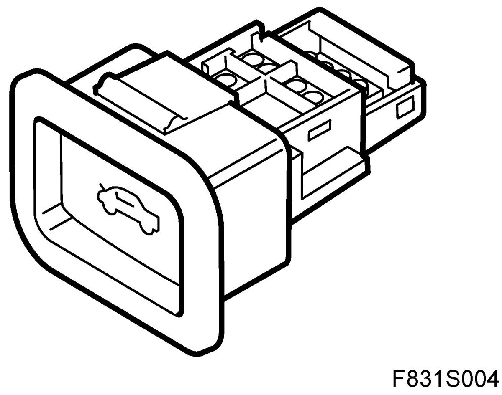
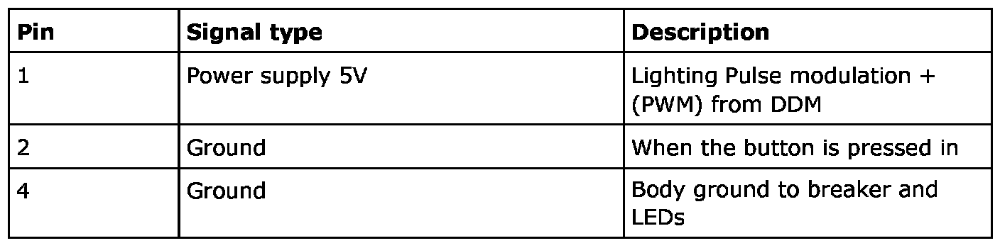
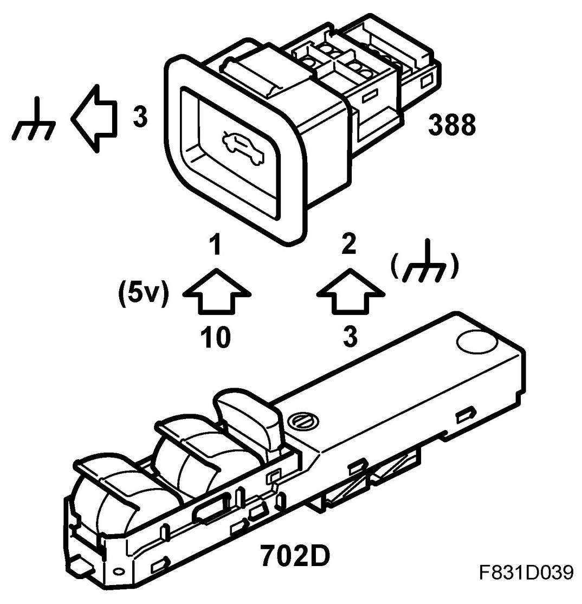
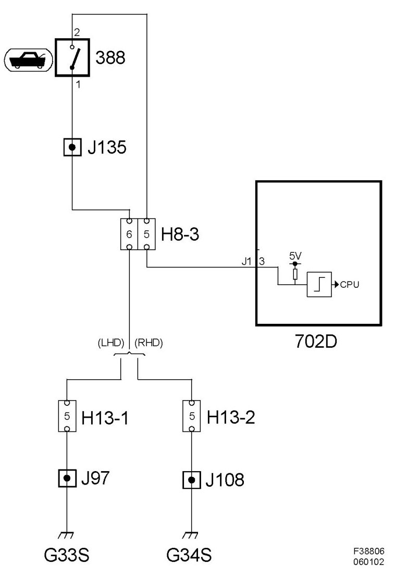

Bootlid Switch (388)
Bootlid Switch (388)
Location
Bootlid switch (388)
Main task
Used to open the bootlid.
Type
The button is non-locking and contains a single pole breaker that is made when pushed in. The button has 2 integrated LEDs for background lighting.

Connect
The button has direct chassis grounding and is fed with 5V via a resistor of 2.7 kohm integrated in DDM. The control module input is digital, a voltage above 2V is interpreted as an open circuit while lower than 2V is interpreted as closed. The LEDs are fed with PWM+ from DDM and use the same ground as the breaker.


